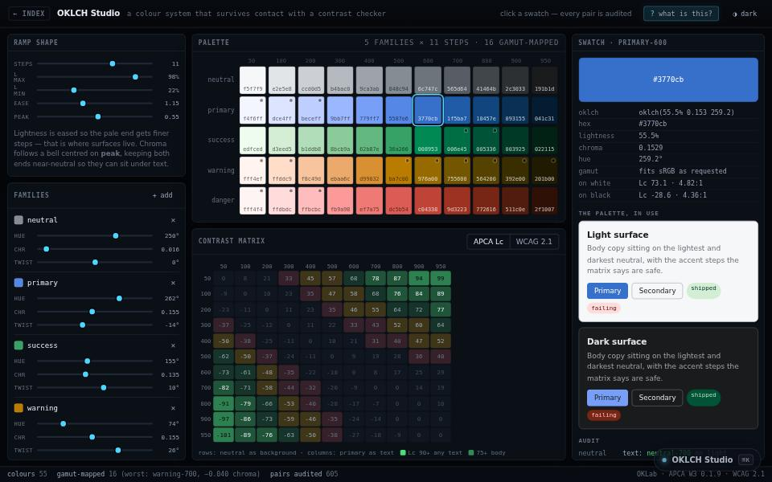

engineering tool · about 4 min · The Engine Rooms
OKLCH Studio
Building a colour palette that still passes when someone runs an accessibility check on it.

The problem
Palettes that look fine fail the accessibility check run on them later.
What it does
- Palettes generated in a perceptual colour space
- Honest mapping into sRGB
- Every pair audited with two contrast models
The most interesting decision
HSL lies about lightness
Yellow and navy can share an HSL lightness, so a ramp built that way fails contrast differently in every hue. Generating in OKLCH keeps each step the same brightness.
Built with
- OKLCH colour space
- Honest sRGB gamut mapping
- WCAG + APCA contrast
Evidence
Contrast that is checked rather than hoped for. Read its tests
Its world
A prism tower splitting one beam into a palette that passes.